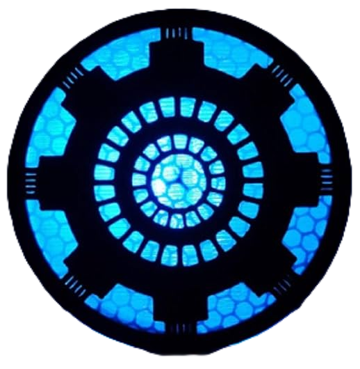
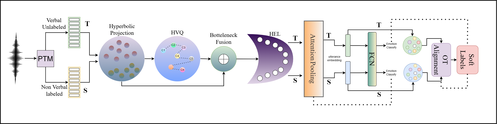

We introduce a paralinguistic supervision paradigm for low-resource multilingual speech emotion recognition (LRM-SER) that leverages non-verbal vocalizations to exploit prosody-centric emotion cues. Unlike conventional SER systems that rely heavily on labeled verbal speech and suffer from poor cross-lingual transfer, our approach reformulates LRM-SER as non-verbal-to-verbal transfer, where supervision from a labeled non-verbal source domain is adapted to unlabeled verbal speech across multiple target languages.
To this end, we propose NOVA-ARC (NOn-verbal to Verbal Adaptation via hyperbolic Alignment, Radial calibration, and Codebook tokens), a geometry-aware framework that models affective structure in the Poincaré ball, discretizes paralinguistic patterns via a hyperbolic vector-quantized prosody codebook, and captures emotion intensity through a hyperbolic emotion lens (HEL). For unsupervised adaptation, NOVA-ARC performs optimal-transport-based prototype alignment between source emotion prototypes and target utterances, inducing soft supervision for unlabeled speech while being stabilized through consistency regularization.
Experiments show that NOVA-ARC delivers the strongest performance under both non-verbal-to-verbal adaptation and the complementary verbal-to-verbal transfer setting, consistently outperforming Euclidean counterparts and strong SSL baselines. To the best of our knowledge, this is the first work to move beyond verbal-speech–centric supervision by introducing a non-verbal–to–verbal transfer paradigm for SER.
Emotion labels in verbal speech are inevitably entangled with words, phonotactics, and language-dependent expressive conventions. Models trained on verbal emotion corpora overfit to lexical/phonetic correlates that do not transfer across languages. Non-verbal vocalizations offer a cleaner alternative:
NOVA-ARC operates in a shared hyperbolic space across source (non-verbal) and target (verbal) domains. The pipeline proceeds in five stages:

Audio is resampled to 16 kHz and fed into a frozen SSL encoder — voc2vec, WavLM, wav2vec 2.0, or MMS-1B — to extract frame-level representations {zt}. voc2vec is explicitly pretrained on non-verbal human sounds and is the best-performing backbone in our setting.
Frame features are projected and mapped into the Poincaré ball 𝔻dc via the exponential map at the origin. All subsequent operations — tokenization, fusion, prototype alignment — are performed in this hyperbolic space with curvature κ = −1.0 and latent dimension d = 256.
Each hyperbolic frame embedding is assigned to its nearest codeword under the Poincaré distance (codebook size K = 256), yielding a discrete prosody token. Continuous and discrete embeddings are fused via Möbius addition — directly in hyperbolic space — and compressed through a bottleneck (db = 128).
A learnable radial calibration layer decomposes each embedding into radius and direction, then applies a power-law warp controlled by learned scalar α to rescale emotion intensity. This bridges the intensity mismatch between non-verbal and verbal speech, with α initialized at 1.0 and optimized jointly during training.
Source class prototypes (Fréchet means) guide adaptation of unlabeled target speech. An entropically regularized optimal transport plan (50 Sinkhorn iterations, ε = 0.05) aligns target utterances to prototypes, producing soft pseudo-labels. Two complementary losses — LOPT (geometric alignment) and LOT-CE (soft cross-entropy) — jointly train the model on unlabeled target speech.
Four SSL encoders evaluated. voc2vec, pretrained on 125h of non-verbal sounds, is the strongest for our setting.
All operations use exponential/log maps at origin, Möbius addition, and Poincaré distance for a consistent hyperbolic workflow.
K = 256 codewords, commitment weight β = 0.25. Assignment by Poincaré distance, not Euclidean. Codebook and commitment losses.
Power-law warp on the radial dimension of hyperbolic frames. Fully differentiable; learned jointly with the rest of the model.
Sinkhorn iterations with source class prior marginal and uniform target marginal. Prototypes refreshed once per epoch.
Two 1D conv blocks (64→128 filters, kernel=3) + attention pooling + linear softmax. 5.2M–8.5M trainable parameters.
Table 1: Cross-corpus performance (individual SSL encoders, no adaptation)
In-domain supervised performance on verbal and non-verbal splits. voc2vec dominates non-verbal emotion recognition (95.26%); speech SSL encoders lead on verbal in-domain evaluation. The ranking flips across regimes — validating the core premise of NOVA-ARC.
| Dataset | voc2vec | WavLM | wav2vec 2.0 | MMS | ||||
|---|---|---|---|---|---|---|---|---|
| Acc ↑ | F1 ↑ | Acc ↑ | F1 ↑ | Acc ↑ | F1 ↑ | Acc ↑ | F1 ↑ | |
| Verbal Speech | ||||||||
| ASVP-ESD (Verbal) | 32.67 | 30.41 | 84.39 | 82.57 | 80.56 | 77.90 | 87.63 | 85.78 |
| MESD (Spanish) | 49.02 | 46.91 | 68.35 | 67.24 | 72.63 | 71.98 | 96.47 | 93.85 |
| AESDD (Greek) | 35.86 | 34.19 | 84.27 | 82.94 | 73.41 | 70.98 | 61.59 | 60.12 |
| RAVDESS (English) | 36.51 | 33.97 | 85.69 | 82.90 | 76.38 | 74.69 | 83.67 | 82.05 |
| Emo-DB (German) | 44.69 | 42.28 | 96.31 | 94.82 | 97.67 | 95.38 | 94.15 | 91.82 |
| CREMA-D (English) | 42.31 | 41.06 | 86.71 | 85.20 | 86.02 | 84.47 | 79.23 | 76.91 |
| Non-Verbal | ||||||||
| ASVP-ESD (Non-Verbal) | 95.26 | 93.79 | 63.61 | 60.92 | 58.92 | 56.47 | 46.03 | 43.65 |
Bold green = best per row. voc2vec achieves 95.26% on non-verbal — far ahead of speech SSL encoders.
Table 2: NOVA-ARC Adaptation — Euclidean vs. Hyperbolic (APD Non-Verbal → Verbal Targets)
NOVA-ARC with hyperbolic geometry consistently outperforms the Euclidean variant across all encoders and all target datasets. Gains are systematic — not tied to a specific backbone — confirming NOVA-ARC contributes a genuinely transferable adaptation mechanism.
| Target Dataset | voc2vec (Euclidean) | voc2vec (Hyperbolic) | WavLM (Hyperbolic) | MMS (Hyperbolic) | ||||
|---|---|---|---|---|---|---|---|---|
| Acc | F1 | Acc | F1 | Acc | F1 | Acc | F1 | |
| ASVP-ESD (Verbal) | 87.31 | 85.06 | 92.40 | 89.79 | 91.03 | 88.92 | 89.43 | 88.15 |
| MESD (Spanish) | 84.58 | 81.92 | 90.67 | 89.05 | 81.09 | 79.36 | 86.79 | 83.93 |
| AESDD (Greek) | 79.63 | 78.21 | 84.39 | 82.92 | 82.98 | 81.06 | 82.03 | 80.24 |
| RAVDESS (English) | 87.04 | 85.53 | 93.79 | 90.61 | 92.47 | 90.31 | 89.51 | 87.69 |
| Emo-DB (German) | 86.71 | 83.69 | 92.46 | 90.68 | 91.26 | 88.93 | 88.11 | 85.74 |
| CREMA-D (English) | 85.26 | 84.03 | 91.32 | 89.87 | 90.76 | 89.29 | 87.94 | 85.22 |
Green = best overall · Blue = strong result. voc2vec + hyperbolic reaches 93.79% on RAVDESS.
Each component of NOVA-ARC is removed individually. Source: ASVP non-verbal → Target: ASVP verbal. Every ablation leads to a clear degradation, confirming the synergistic design.
| Configuration | Acc ↑ | F1 ↑ | Accuracy |
|---|---|---|---|
| NOVA-ARC (full) | 92.40 | 89.79 | |
| Euclidean space (no Poincaré) | 87.31 | 85.06 | |
| Euclidean OT (hyperbolic space only) | 80.24 | 75.64 | |
| Token only (discrete, no continuous) | 76.90 | 73.18 | |
| No VQ (continuous only) | 74.22 | 70.43 | |
| No HEL (no intensity calibration) | 72.75 | 51.44 | |
| Concat/MLP instead of Möbius fusion | 65.36 | 62.24 | |
| Adversarial domain adaptation | 53.49 | 43.76 | |
| OT-UDA baseline | 50.78 | 41.33 |
Key takeaways: (1) Hyperbolic geometry contributes +5.09% over Euclidean. (2) Continuous + discrete cues are complementary — removing either hurts. (3) Möbius integration is crucial (−27% without it). (4) HEL calibration collapses F1 to 51.44 when removed. (5) Standard baselines (adversarial DA, OT-UDA) are dramatically weaker at ~51–53%.
All datasets are standardized to the shared label space: happy · anger · disgust · sadness · fear
Realistic emotional corpus with non-speech vocalizations and verbal speech. Non-verbal split used as labeled source; verbal split as unlabeled target.
Source + TargetMexican Emotional Speech Database. Female adult, male adult, and child voices recorded in a professional studio.
Verbal TargetActed speech corpus in Greek, ~500 utterances across 5 emotions. Provides evaluation on a typologically distinct language.
Verbal TargetRyerson Audio-Visual Database. 7,356 validated recordings from 24 professional actors. Audio-only speech subset used.
Verbal TargetBerlin Database of Emotional Speech. 800 utterances from 10 speakers across 7 emotions. A classic German SER benchmark.
Verbal TargetCrowd-sourced Emotional Multimodal Actors Dataset. 7,442 clips from 91 actors. Audio-only modality used as target domain.
Verbal TargetIf you find this work useful, please cite: